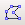

Recursos gràfics (I)
Com tot processador de text modern, LibreOffice Writer permet la inserció, dins del text escrit, de tot un seguit de recursos gràfics. En aquesta pràctica, en veuren els més bàsics.
Imatges i marques d'aigua
LibreOffice Writer permet la inserció de tres tipus d'imatges (depenent del seu origen):
-
Imatges escanejades (naturalment, necessita un escàner configurat al sistema).
-
Imatges importades directament des d'un fitxer gràfic.
-
Imatges “enganxades” directament des de la memòria temporal (copiades des d'un altre origen).
En tots els casos, la imatge és inserida al document com un objecte i se'n podran manipular les seves propietats.
-
Recupereu el document planetesexteriors.odt
-
Assegureu-vos de ser a la primera pàgina i inseriu-hi (Insereix | Imatge | Des d'un fitxer…) el fitxer jupiter_gany, un cop descomprimit, (o trieu la foto que més us agradi a http://commons.wikimedia.org/wiki/Jupiter?uselang=ca).
-
Dimensioneu-lo actuant sobre els punts sensibles, però sense deformar-ne les proporcions (és a dir, actueu sobre els punts de les cantonades i no sobre els punts centrats a les vores).
-
Col·loqueu la imatge al lloc que més us agradi.
-
Ajusteu la posició i la separació respecte al text circumdant (Menú de context | Gràfic… | Ajusta).
-
Repetiu el procés amb les pàgines i els fitxers següents: saturn_planet_large , uranus i neptune (també en podeu triar d'altres a: http://commons.wikimedia.org/wiki/Saturn_%28planet%29?uselang=ca http://commons.wikimedia.org/wiki/Uranus?uselang=ca http://commons.wikimedia.org/wiki/Neptune?uselang=ca).
De vegades, pot interessar posar una marca d'aigua als fulls impresos. LibreOffice Writer permet fer-ho d'una forma molt fàcil.
Conserveu el mateix fitxer planetesexteriors.odt que heu estat treballant i inseriu-hi una marca d'aigua.
-
Aneu al capdamunt del document.
-
Feu Insereix | Imatge | Des d'un fitxer… i trieu planetesaescala, un cop descomprimit.
-
Ancoreu-lo a la pàgina (Menú de context | Àncora | A la pàgina).
-
Alineeu-lo al mig (Menú de context | Alineament | Base al mig).
-
Ajusteu-lo en segon pla (Menú de context | Ajusta | En segon pla).
-
Per acabar, poseu mode gràfic Filigrana a la Barra d'eines Imatge.
El mòdul de dibuix
Per poder accedir a les eines de dibuix del LibreOffice Writer, cal tenir visible la barra d'eines Dibuix ja sigui cridant-la des de Visualitza | Barra d'eines | Dibuix, o bé clicant la icona de la barra d'eines Estàndard.
-
: Selecciona. Permet seleccionar objectes. Si voleu seleccionar un sol objecte, senzillament cliqueu-hi damunt. Si en voleu seleccionar més d'un, traceu una àrea que els englobi. Si voleu afegir un objecte més a la selecció, cliqueu-hi damunt mentre manteniu polsada la tecla Majús. Quan es tenen diversos objectes seleccionats, se'ls pot Agrupar i, llavors, es comporten com si en fossin un de sol.
-
: Línia. Dibuixarà una línia recta quan arrossegueu el cursor per la pàgina actual. Si, simultàniament, es prem la tecla Majús, la línia dibuixada surt només o vertical, o horitzontal o amb una inclinació de 45º. Una vegada dibuixada la línia, es poden modificar els seus acabaments. Si una vegada dibuixada la línia es fa un doble clic damunt seu, es podrà afegir text arrapat al traç. Si es vol fer desaparèixer la ratlla, poseu-hi estil invisible.
-
: Rectangle. Dibuixarà un rectangle quan cliqueu i arrossegueu el cursor per la pàgina actual. Si, simultàniament, es prem la tecla Majús, dibuixareu un quadrat. Emprant les eines d'emplenament d'àrea de la barra d'eines Propietats de l'objecte de dibuix () podreu canviar el color del rectangle.
-
: El·lipse. Dibuixarà una el·lipse quan cliqueu i arrossegueu el cursor per la pàgina actual. Si, simultàniament, premeu la tecla Majús, dibuixareu un cercle. Emprant les eines d'emplenament d'àrea de la barra d'eines Propietats de l'objecte de dibuix () podreu canviar el color de l'el·lipse.
-
: Polígon. Aquesta no és una de les eines que mostra per defecte la barra d'eines i cal afegir-la posteriorment. Dibuixarà un polígon format per diversos segments rectes units per un extrem. Actueu com si volguéssiu crear una línia recta i, quan feu clic per acabar-la, l'un deixarà traçar el segment següent. Acabareu el procés fent un doble clic damunt del punt inicial del polígon. Recordeu que si manteniu premuda la tecla Majús només fareu línies amb una variació d'inclinació de 45º. Si una vegada acabat el polígon el voleu concretar millor, podeu activar el mode Punts ().
-
 : Línia de forma lliure. Dibuixarà una línia en arrossegar el punter del ratolí per la pàgina activa. Cliqueu on voleu que comenci la línia,
desplaceu-lo i allibereu-lo quan voleu acabar el traç. Si aquest alliberament el feu prop del punt d'inici, es traçarà una forma tancada. Si una vegada acabada la figura la voleu concretar millor, podeu activar el mode
Punts ({dibuix_punts.gif|}).
: Línia de forma lliure. Dibuixarà una línia en arrossegar el punter del ratolí per la pàgina activa. Cliqueu on voleu que comenci la línia,
desplaceu-lo i allibereu-lo quan voleu acabar el traç. Si aquest alliberament el feu prop del punt d'inici, es traçarà una forma tancada. Si una vegada acabada la figura la voleu concretar millor, podeu activar el mode
Punts ({dibuix_punts.gif|}).
-
: Text. Permet dibuixar un marc de text que serà tractat com un dibuix i el podreu desplaçar on creieu més convenient. Aquest marc de text té la característica que es pot girar a voluntat.
-
: Llegendes. Dibuixarà una línia acabada en un rectangle que permetrà escriure-hi text al seu interior. Punxeu al punt on voleu que comenci la llegenda i arrossegueu fins on voleu que s'acabi. Podreu canviar la mida del requadre actuant sobre els punts sensibles. Si voleu que el requadre s'arrodoneixi, actueu sobre el punt sensible més gros quan la fletxa del ratolí canviï de forma per una mà.
-
: Formes bàsiques. Aquesta eina presenta un menú que permet inserir, al document, algunes formes senzilles que es podran modificar una mica arrossegant-les pels punts sensibles una vegada queden seleccionades.
-
: Formes de símbol. Aquesta eina presenta un menú que permet inserir, al document, algunes formes de figures senzilles que es podran modificar una mica arrossegant-les pels punts sensibles una vegada queden seleccionades.
-
: Fletxes de bloc. Aquesta eina presenta un menú que permet inserir, al document, algunes figures de fletxes que es podran modificar una mica arrossegant-les pels punts sensibles una vegada queden seleccionades.
-
: Diagrames de flux. Aquesta eina presenta un menú que permet inserir, al document, algunes figures de diagrames de flux, molt útils si es vol representar una seqüència de programació. Es podran modificar una mica arrossegant-les pels punts sensibles una vegada queden seleccionades.
-
: Llegendes. Aquesta eina presenta un menú que permet inserir, al document, algunes figures de llegendes predissenyades que es podran modificar una mica arrossegant-les pels punts sensibles una vegada queden seleccionades.
-
: Estrelles. Aquesta eina presenta un menú que permet inserir, al document, algunes figures d'estrelles i tires que es podran modificar una mica arrossegant-les pels punts sensibles una vegada queden seleccionades.
-
: Punts. Aquesta eina permet l'accés a la modificació dels punts d'alguns dels tipus de dibuix.
-
: Galeria Fontwork. Permet col·locar un text Fontwork al document.
-
{dibuixdesdunfitxer.gif|}}: Des d'un fitxer. Permet la inserció d'una imatge al document des d'un fitxer.
-
: Extrusió activada/desactivada. Permet activar o desactivar l'extrusió en les imatges 3D. En aquest cas, apareixerà una nova barra d'eines.
-
: Permet afegir/treure eines a la Barra d'eines Dibuix.
El podi
Sou especialistes d'Educació Física i voleu fer una orla que contingui un podi amb les fotos dels tres primers equips classificats en un torneig de futbol-sala que heu organitzat a l'hora del pati.
Emprant les eines de dibuix que heu estat veient, feu un podi semblant a aquest:

Gràfics estadístics
-
Recupereu el document nadons.odt.
-
Seleccioneu (inclòs el títol) les columnes corresponents a l'any de naixement, nens i nenes.
-
Crideu Insereix | Diagrama….
-
Us apareixerà l'assistent; confirmeu la primera pantalla amb les dues caselles marcades i seguiu endavant.
-
Trieu el tipus de diagrama i aneu a la pantalla següent.
-
Trieu la variant i aneu a la pantalla següent.
-
Poseu títol al gràfic (per exemple: “Nens i nenes nascuts vius entre 1996 i 2005”).
-
Acabeu el procés clicant el botó Crea.
-
Ajusteu, si cal, l'amplada del gràfic per tal que quedin bé tots els components (feu-ho clicant un dels punts sensibles i arrossegant-lo).
-
Deseu el document en la vostra carpeta de treball.

|
|

|
|